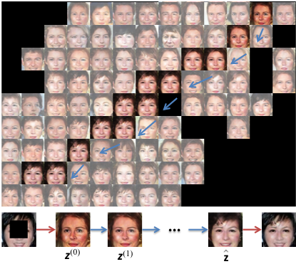

|
Chen Chen
Research Scientist
Apple AI and Machine Learning
Email: cchen156@illinois.edu |
|
I am a researcher in AI and machine learning at Apple. I obtained my PhD degree from ECE department at the University of Illinois at Urbana-Champaign. My research interests include computational photography, computer vision and machine learning, specially on low level image to image processing.
|
Seeing Motion in the Dark
Chen Chen, Qifeng Chen, Minh N. Do, and Vladlen Koltun
ICCV 2019 (Oral Presentation)
Video
Code&Data
ICCV Daily |
|
Learning to See in the Dark
Chen Chen, Qifeng Chen, Jia Xu, and Vladlen Koltun
CVPR 2018
Project Page
Video
Code&Data |
|  |
Semantic Image Inpainting with Deep Generative Models
Raymond A. Yeh*, Chen Chen*, Teck Yian Lim, Alexander G. Schwing, Mark Hasegawa-Johnson, and Minh N. Do
CVPR 2017
Code |
|
Robust Image and Video Dehazing
Chen Chen, Minh N. Do, and Jue Wang
ECCV 2016
Results
Video Data
Code |
|
Deep Sparse Representation for Robust Image Registration
Yeqing Li*, Chen Chen*, Fei Yang, and Junzhou Huang
CVPR 2015
TPAMI 2018
|
|
Image Fusion with Local Spectral Consistency and Dynamic Gradient Sparsity
Chen Chen, Yeqing Li, Junzhou Huang, and Wei Liu
CVPR 2014 (Oral Presentation)
TIP 2015
Project Page
Code |
 |
Preconditioning for Accelerated Iteratively Reweighted Least Squares in Structured Sparsity Reconstruction
Chen Chen, Junzhou Huang, Lei He, and Hongsheng Li
CVPR 2014 (Oral Presentation)
Medical Image Analysis 2018
Project Page
Code |
|
Diffuse Optical Tomography Enhanced by Clustered Sparsity for Functional Brain Imaging
Chen Chen, Fenghua Tian, Hanli Liu, and Junzhou Huang
TMI 2014
Code |
 |
Compressive Sensing Magnetic Resonance Imaging with Structured Sparsity
Chen Chen, Yeqing Li, and Junzhou Huang
MICCAI 2012, 2013, 2014
NIPS 2012
Project Page
Code |
|
|